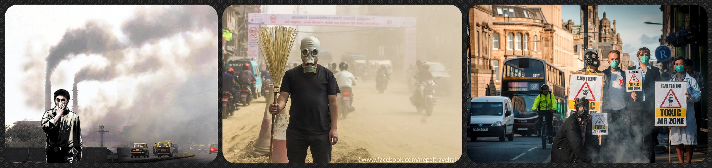

Air pollution is the mixing of foreign substances to the whole atmospheric air.Increasing concentration of the harmful and toxic materials in the fresh air of the atmosphere is causing air pollution. The level of air pollution depends on the type and amount of pollutants released from various sources. Topographical and meteorological conditions are increasing the spread and concentration of the pollutants. Variety of raw materials used in the manufacturing process in industries is increasing the type and quantum of emissions of harmful gases. Air Pollutants like harmful liquid droplets, solids particulates, and toxic gases (oxides of carbon, halogenated and non-halogenated hydrocarbons, nitrogen and sulphur gases, suspended inorganic particulate matters, inorganic and organic acids, bacteria, viruses, insecticides etc) which are generally not the constituents of fresh air are very hazardous to the plant and animal life. There are two types of air pollution sources which are natural sources and man-made sources. Man-made sources of the air pollution are industries, agriculture, power plants, automobiles, domestic sources, etc. Some of the air pollutants from the man-made sources are like smokes, dust, fumes, particulate matters, etc. Because of the increasing number of air pollutants, it has been divided into two types such as primary pollutants and secondary pollutants. Primary pollutants are those affecting the fresh air directly and emitted from smoke, ash, dust, fumes, hydrogen sulphide, ammonia, nitric oxide and radioactive compounds. Secondary pollutants are those affecting the air indirectly by chemical interactions to the primary pollutants and other atmospheric constituents such as sulphur-trioxide, ozone, hydrocarbons, nitrogen dioxide, etc. The get together effort of the human beings all over the world may help in controlling the level of air pollution. The establishment of industrial estates should be away from residential areas, motivate use of tall chimneys (with filters and electrostatic precipitators) instead of small, promote use of high temperature incinerators, use of non-combustive sources of energy, promote use of non-lead antiknock agents in the gasoline, promote re-plantation and so many positive efforts.
Home Soil Pollution Water Pollution Noise Pollution Pollution Control